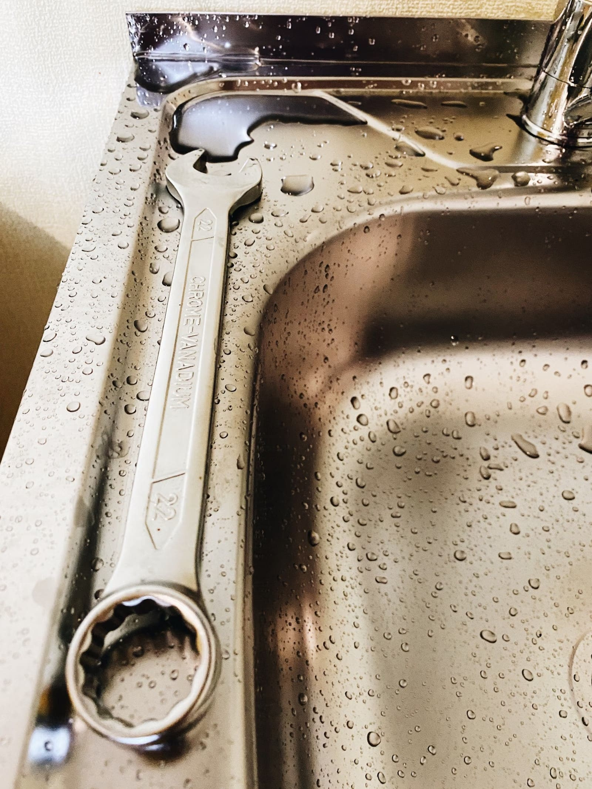
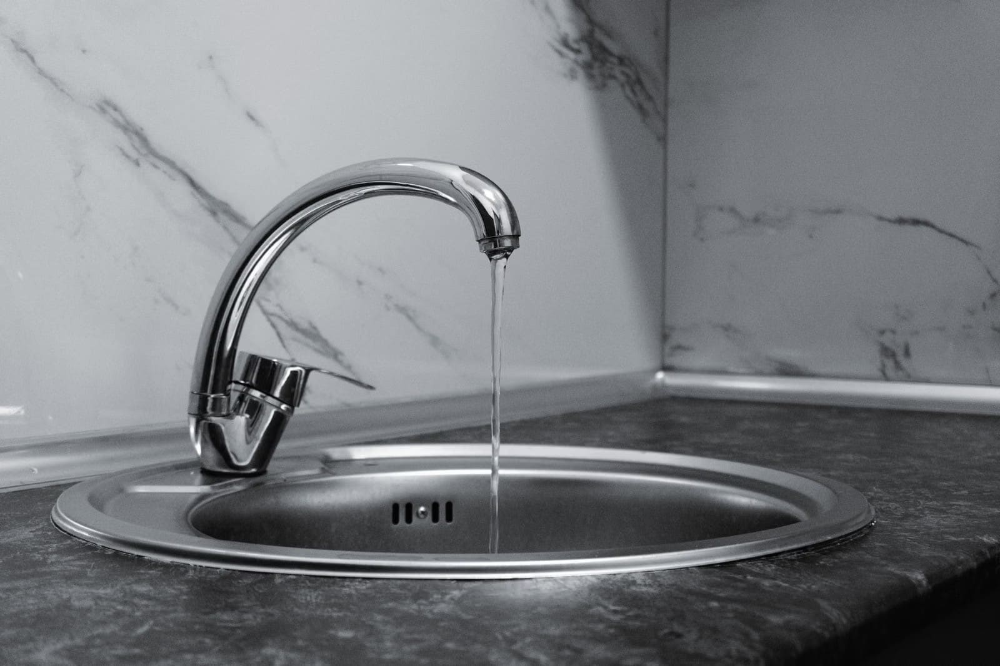

Küçükçekmece'de su tesisatı arıza ve onarımı. Haftanın her günü, sabah erken saatten itibaren hizmetinizdeyiz.

Arızayı anlatın, size yol gösterelim.
Sızıntı, basınç düşüklüğü ve borulardaki arızaların tespiti ve onarımı.
Gömülü klozet ve rezervuar arızaları, banyo tesisatı onarımı.
Evye, musluk ve mutfak tesisatıyla ilgili arızalar.
Google'da 272 yorumda 5,0 puan.
"Gömülü klozet arızası için çagırdık hızlı ve fiyat vererek geldiler 30 dk da onarıp çıktılar fiyatlarıda uygun"
"Hızlı servis ve kaliteli işçilik için çok teşekkür ederim. Tesisat sorunumuzu profesyonel bir şekilde çözdüler. Herkese tavsiye ederim."
"Tam vaktinde gelen Ustamız, kısa bir sürede disiplinli harika bir çalışma gerçekleştirdi. Kesinlikle öneriyorum ve teşekkür ediyorum."
